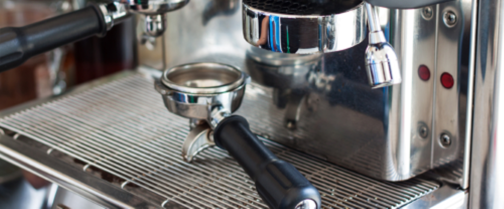
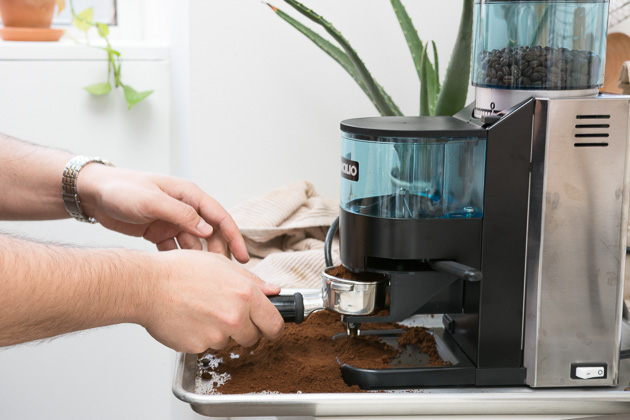

On Februrary 12, it is a new start for the four of us. Leaving everything else behind, we finally gotten our first own franchise coffee shop approval. As all of us still couldn't snap out of this dream sometimes ago, we still thought getting the warrant approval is impossible. But, it was just too true that we can finally succeed in our new life goal moreover so. Which is why to kickstart eveything, we spend a lot of effort in furnishing and decorating our first coffee shop hoping that it will be smoothly sail until a new checkpoint.
View

Espresso (Short Black)
The espresso (aka “short black”) is the foundation and the most important part to every espresso based drink. So much so that we’ve written a guide on how to make the perfect espresso shot. But for the purposes of this post an espresso consists of:
• 1 Shot of espresso in an espresso cup

Double Espresso (Doppio)
A double espresso (aka “Doppio”) is just that, two espresso shots in one cup. Therefore a double espresso consists of:
• 2 shots of espresso in an espresso cup

Short Macchiato
A short macchiato is similar to an espresso but with a dollop of steamed milk and foam to mellow the harsh taste of an espresso. You will find that baristas in different countries make short macchiatos differently. However the traditional way of making a short macchiato is as follows:
• 1 Shot of espresso in a short glass or espresso cup
• A dollop of steamed milk and foam placed on top of the espresso
Barista tip: The key to the perfect short macchiato is the rule of thirds. That is you want three different colored layers in the macchiato. A bottom dark layer to
represent the espresso, a middle layer that mixes the espresso and the milk, and a top layer of predominantly steamed milk. Refer to the picture above as an
example.

Short Macchiato
A long macchiato is the same as a short macchiato but with a double shot of espresso. The same rule of thirds applies in the traditionally made long macchiato:
• 2 shots of espresso in a tumbler glass or cup
• A dollop of steamed milk and foam placed on top of the espresso
Barista tip: The key to making the perfect three layers is to place the dollop of steamed milk and foam on top of the espresso and then gently turning the cup clockwise a few times to mix the milk and espresso.

Ristretto
A ristretto is an espresso shot that is extracted with the same amount of coffee but half the amount of water. The end result is a more concentrated and darker espresso extraction. It is made as follows:
• Extract a standard espresso shot with half the amount of water.
• Alternatively turn off a normal espresso extraction before the espresso starts to blonde.

Long Black (Americano)
A long black (aka “americano”) is hot water with an espresso shot extracted on top of the hot water. It is made as follows:
• Fill a cup with 2/3rds full of hot water
• Extract 1 shot of espresso over the hot water
Barista Tip: Make sure you back-wash your portafilter before making a long black, otherwise you might find grinds from your coffee grinder floating in your coffee.

Café Latte
A café latte, or “latte” for short, is an espresso based drink with steamed milk and micro-foam added to the coffee. This coffee is much sweeter compared to an espresso due to the steamed milk. It is made as follows:
• Extract 1 shot of espresso into a tumbler glass
• Add steamed milk
• 1cm of micro-foam on top of the steamed milk
Barista tip: In the USA it is common to use a cup instead of a tumbler glass for a latte.

Cappuccino
A cappuccino is similar to a latte. However the key difference between a latte and cappuccino is that a cappuccino has more foam and chocolate placed on top of the drink. Further a cappuccino is made in a cup rather than a tumbler glass. It is made as follows:
• Extract 1 shot of espresso into a cup
• Add steamed milk
• Add 2-3cm of micro-foam on top of the steamed milk
• Sprinkle chocolate on top of the coffee

Flat White
A flat white is a coffee you’ll primarily find in Australia and New Zealand. It is made the same as a cappuccino expect it does not have any foam or chocolate on top. It is made like this:
• 1 shot of espresso into a cup
• Add steamed milk into the cup but no micro-foam

Piccolo Latte
A piccolo latte is a café latte made in an espresso cup. This means it has a very strong but mellowed down espresso taste thanks to the steamed milk and micro foam within it. There are two ways of making a piccolo latte, with either 1 espresso shot or 1 ristretto shot:
• 1 shot of espresso or 1 ristretto shot of espresso in a espresso cup
• Add steamed milk and small amount of micro-foam.

Mocha
A mocha is a mix between a cappuccino and a hot chocolate. It is made by putting mixing chocolate powder with an espresso shot and then adding steamed milk and micro-foam into the beverage. The steps are as follows:
• Extract 1 shot of espresso into a cup
• Add one spoon of chocolate powder into the espresso shot and mix
• Add steamed milk
• Add 2-3cm of micro-foam
• Sprinkle chocolate powder on top

Affogato
An affogato is a simple dessert coffee that is treat during summer and after dinner. It is made by placing one big scoope of vanilla ice cream within a single or double shot of espresso:
• Add one scoop of vanilla ice-cream into a tumbler glass milk
• Pour a single or double shot of espresso over the vanilla ice-cream
Barista Tip: If you feel like an irish kick add a shot of Frangelico liqueur into the mix.
Brew Espresso Progress
Step 1:
Remove your portafilter from the espresso machine grouphead.

Step 2:
Purify the grouphead using hot water.

Step 3:
Measure the dose for enough amount for your portion.For adouble shot, grind between 18–21 grams of coffee into your basket. This would be the most familiar ways to make your nice expresso.

Step 4:
Holding Tamp with 90 degree angle. Tamp grounds firmly (using 30 lbs. of pressure). Next, press water button briefly to flush out stagnant water.

Step 5:
Place your portafilter on a clean, flat surface and position your tamper level on top of the grounds. Without driving your palm into the tamper’s base (which can cause gnarly wrist problems down the line), apply pressure downward. You don’t need to tamp incredibly hard—just enough to seal the coffee in evenly. Twenty to 30 pounds of pressure should do it. Give the tamper a gentle spin. This will smooth, or “polish,” the grounds for an even extraction.

Step 6:
Start your shot and pull it into a pre-heated ceramic demitasse.

Step 7:
After evrything prepare, you can start brew your Espresso

Feedback
Dearest Customer, Please leave your feedback for us. Thanks!
As much as we’re obsessed with and love our coffee beans, they’re not a very sociable bunch. Which is why we’d like to hear from you! Feel free to tell us how we’re doing, what you think we could improve on, or just any old thing. Send us an email or give us a call - we welcome your comments!
Contact us @
Snail mail:
Coffee Cafe Sdn Bhd
The Wisma Damansara Heights,
Level 1, Lot 11,
Jalan 225, Section 51A,
51600 Kuala Lumpur,
Selangor,
MALAYSIA
Email:
feedback@coffeecafe.com
Facebook:
www.facebook.com/coffeecafe
Instagram:
www.instagram.com/coffeecafe
Coffee Cafe Digital Network
We're bringing the most interesting stuff on the web right to your comfy chair. It's the Coffee Cafe Digital Network.
Wi-Fi
Our coffee brings people together – and our Wi-Fi service helps keep them connected. Learn how to surf while you sip at Coffee Cafe.
Store Design
What makes our coffeehouse such a vibrant and inviting space? A philosophy of community and environmental responsibility.
Mobile Applications
You can use your phone to pay for your purchases at Starbucks. It’s fast, easy and convenient.